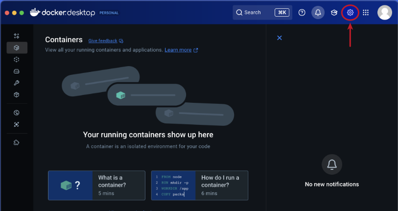
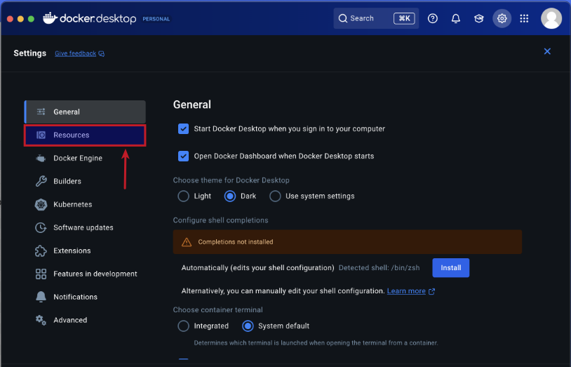
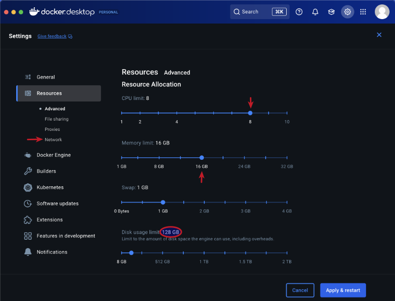
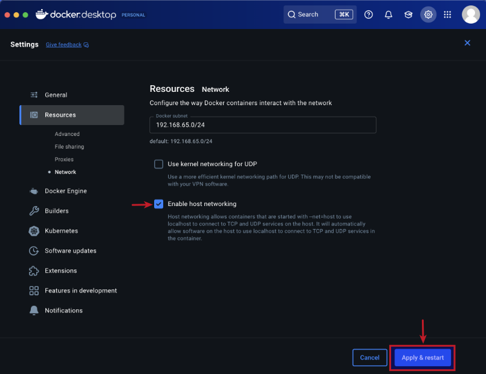

| PolarSPARC |
Quick Primer on Ollama
| Bhaskar S | *UPDATED*04/04/2026 |
Overview
Ollama is a powerful open source platform that simplifies the process of running various Large Language Models (or LLM s for short) on cloud (Ollama's cloud service) as well as on a local machine. It enables one to download the various pre-trained LLM models such as, Alibaba Qwen 3.5, Google Gemma-4, IBM Granite 4, Microsoft Phi-4, OpenAI GPT-OSS, etc., and use them for building AI applications.
In this article, we will *ONLY* demonstrate the setup and usage on a local machine.
The Ollama platform also exposes an API endpoint, which enables developers to build agentic AI applications that can interact with the LLM(s) using the API endpoint.
Last but not the least, the Ollama platform effectively leverages the underlying hardware resouces of the machine, such as CPU(s) and GPU(s), to efficiently and optimally run the LLMs for better performance.
In this primer, we will demonstrate how one can effectively setup and run the Ollama platform using the Docker image on a local machine.
Installation and Setup
The installation and setup will can on a Ubuntu 24.04 LTS based Linux desktop OR a Apple Silicon based Macbook Pro. Ensure that Docker is installed and setup on the desktop (see instructions).
For Linux and MacOS, ensure that the Python 3.1x programming language as well as the Jupyter Notebook packages are installed. In addition, ensure the command-line utilities curl and jq are installed.
For Linux and MacOS, we will setup two required directories by executing the following command in a terminal window:
$ mkdir -p $HOME/.ollama
For Linux and MacOS, to pull and download the required docker image for Ollama, execute the following command in a terminal window:
$ docker pull ollama/ollama:0.20.2
The following should be the typical output:
0.20.2: Pulling from ollama/ollama 817807f3c64e: Pull complete ae25ca5ada6c: Pull complete b3bf5de5eebd: Pull complete d31d0971c10d: Pull complete Digest: sha256:0455f166da85b1d07f694c33ba09278ca649603c0611ba8e46272b16eed7fccd Status: Downloaded newer image for ollama/ollama:0.20.2 docker.io/ollama/ollama:0.20.2
For Linux and MacOS, to install the necessary Python packages, execute the following command:
$ pip install dotenv ollama pydantic
Note that by default, docker on MacOS is ONLY configured to use upto 8GB of RAM !!!
The following are the steps to adjust the docker resource usage configuration on MacOS:
Open the Docker Desktop on MacOS and click on the Settings gear icon as shown in the following illustration:

Click on the Resources item from the options on the left-hand side as shown in the following illustration:

Choose the CPU, Memory, and Disk Usage limits and then click on the Network item under Resources on the left-hand side as shown in the following illustration:

Choose the Enable Host Networking option and then click on the Apply & Restart button as shown in the following illustration:

Finally, reboot the MacOS system for the changes to take effect.
This completes all the system installation and setup for the Ollama hands-on demonstration.
Hands-on with Ollama
In the following sections, we will show the commands for both Linux and MacOS, however, we will ONLY show the output from Linux. Note that all the commands have been tested on both Linux and MacOS respectively.
Assuming that the ip address on the Linux desktop is 192.168.1.25, start the Ollama platform by executing the following command in the terminal window:
$ docker run --rm --name ollama -p 192.168.1.25:11434:11434 -v $HOME/.ollama:/root/.ollama ollama/ollama:0.20.2
For MacOS, start the Ollama platform by executing the following command in the terminal window:
$ docker run --rm --name ollama -p 11434:11434 -v $HOME/.ollama:/root/.ollama ollama/ollama:0.20.2
The following should be the typical output on Linux:
time=2026-04-04T17:51:23.243Z level=INFO source=routes.go:1744 msg="server config" env="map[CUDA_VISIBLE_DEVICES: GGML_VK_VISIBLE_DEVICES: GPU_DEVICE_ORDINAL: HIP_VISIBLE_DEVICES: HSA_OVERRIDE_GFX_VERSION: HTTPS_PROXY: HTTP_PROXY: NO_PROXY: OLLAMA_CONTEXT_LENGTH:0 OLLAMA_DEBUG:INFO OLLAMA_DEBUG_LOG_REQUESTS:false OLLAMA_EDITOR: OLLAMA_FLASH_ATTENTION:false OLLAMA_GPU_OVERHEAD:0 OLLAMA_HOST:http://0.0.0.0:11434 OLLAMA_KEEP_ALIVE:5m0s OLLAMA_KV_CACHE_TYPE: OLLAMA_LLM_LIBRARY: OLLAMA_LOAD_TIMEOUT:5m0s OLLAMA_MAX_LOADED_MODELS:0 OLLAMA_MAX_QUEUE:512 OLLAMA_MODELS:/root/.ollama/models OLLAMA_MULTIUSER_CACHE:false OLLAMA_NEW_ENGINE:false OLLAMA_NOHISTORY:false OLLAMA_NOPRUNE:false OLLAMA_NO_CLOUD:false OLLAMA_NUM_PARALLEL:1 OLLAMA_ORIGINS:[http://localhost https://localhost http://localhost:* https://localhost:* http://127.0.0.1 https://127.0.0.1 http://127.0.0.1:* https://127.0.0.1:* http://0.0.0.0 https://0.0.0.0 http://0.0.0.0:* https://0.0.0.0:* app://* file://* tauri://* vscode-webview://* vscode-file://*] OLLAMA_REMOTES:[ollama.com] OLLAMA_SCHED_SPREAD:false OLLAMA_VULKAN:false ROCR_VISIBLE_DEVICES: http_proxy: https_proxy: no_proxy:]" time=2026-04-04T17:51:23.243Z level=INFO source=routes.go:1746 msg="Ollama cloud disabled: false" time=2026-04-04T17:51:23.245Z level=INFO source=images.go:499 msg="total blobs: 34" time=2026-04-04T17:51:23.245Z level=INFO source=images.go:506 msg="total unused blobs removed: 0" time=2026-04-04T17:51:23.246Z level=INFO source=routes.go:1802 msg="Listening on [::]:11434 (version 0.20.2)" time=2026-04-04T17:51:23.246Z level=INFO source=runner.go:67 msg="discovering available GPUs..." time=2026-04-04T17:51:23.246Z level=INFO source=runner.go:106 msg="experimental Vulkan support disabled. To enable, set OLLAMA_VULKAN=1" time=2026-04-04T17:51:23.246Z level=INFO source=server.go:432 msg="starting runner" cmd="/usr/bin/ollama runner --ollama-engine --port 36799" time=2026-04-04T17:51:23.263Z level=INFO source=server.go:432 msg="starting runner" cmd="/usr/bin/ollama runner --ollama-engine --port 37477" time=2026-04-04T17:51:23.280Z level=INFO source=types.go:60 msg="inference compute" id=cpu library=cpu compute="" name=cpu description=cpu libdirs=ollama driver="" pci_id="" type="" total="62.7 GiB" available="62.7 GiB" time=2026-04-04T17:51:23.280Z level=INFO source=routes.go:1852 msg="vram-based default context" total_vram="0 B" default_num_ctx=4096
If the linux desktop has Nvidia GPU with decent amount of VRAM (at least 16 GB) and has been enabled for use with docker (see instructions), then execute the following command instead to start Ollama:
$ docker run --rm --name ollama --gpus=all -p 192.168.1.25:11434:11434 -v $HOME/.ollama:/root/.ollama ollama/ollama:0.20.2
On the MacOS, currently there is NO SUPPORT for the Apple Silicon GPU and the above command WILL NOT work !!!
For the hands-on demonstration, we will download and use the Google Gemma-4 4B model.
Open a new terminal window (referred to as T-1), execute the following docker command to download the Alibaba Qwen 3 4B LLM model:
$ docker exec -it ollama ollama run gemma4:e4b
The following should be the typical output:
pulling manifest pulling 4c27e0f5b5ad: 100% |||||||||||||||||||||||||||||||||||||||||||||||||||||||||||||||||||| 9.6 GB pulling 7339fa418c9a: 100% |||||||||||||||||||||||||||||||||||||||||||||||||||||||||||||||||||| 11 KB pulling 56380ca2ab89: 100% |||||||||||||||||||||||||||||||||||||||||||||||||||||||||||||||||||| 42 B pulling f0988ff50a24: 100% |||||||||||||||||||||||||||||||||||||||||||||||||||||||||||||||||||| 473 B verifying sha256 digest writing manifest success >>> Send a message (/? for help)
Open another new terminal window (referred to as T-2) and execute the following docker command to list all the downloaded LLM model(s):
$ docker exec -it ollama ollama list
The following should be the typical output:
NAME ID SIZE MODIFIED gemma4:e4b c6eb396dbd59 9.6 GB 42 hours ago
In the terminal window T-2, execute the following docker command to list the running LLM model:
$ docker exec -it ollama ollama ps
The following should be the typical output:
NAME ID SIZE PROCESSOR CONTEXT UNTIL gemma4:e4b c6eb396dbd59 10 GB 100% GPU 8192 9 minutes from now
As is evident from the Output.5 above, the Google Gemma 4 4B LLM model is fully loaded and running on the GPU.
In the terminal window T-2, execute the following docker command to display information about the specific LLM model:
$ docker exec -it ollama ollama show gemma4:e4b
The following should be the typical output:
Model
architecture gemma4
parameters 8.0B
context length 131072
embedding length 2560
quantization Q4_K_M
requires 0.20.0
Capabilities
completion
vision
audio
tools
thinking
Parameters
temperature 1
top_k 64
top_p 0.95
License
Apache License
Version 2.0, January 2004
...
To test the just downloaded Google Gemma 4 4B LLM model, execute the following user prompt in the terminal window T-1:
>>> describe a gpu in less than 50 words in json format
The following should be the typical output:
````json
{
"description": "A Graphics Processing Unit (GPU) is a specialized electronic circuit designed for rapid parallel processing.
It accelerates tasks like rendering, AI computations, and scientific simulations by utilizing thousands of small cores.",
"word_count": 44
}
```
In the terminal window T-1, to exit the user input, execute the following user prompt:
>>> /bye
Now, we will shift gears to test the local API endpoint.
For Linux, open a new terminal window and execute the following command to list all the LLM models that are hosted in the running Ollama platform:
$ curl -s http://192.168.1.25:11434/api/tags | jq
For MacOS, open a new terminal window and execute the following command to list all the LLM models that are hosted in the running Ollama platform:
$ curl -s http://127.0.0.1:11434/api/tags | jq
The following should be the typical output on Linux:
{
"models": [
{
"name": "gemma4:e4b",
"model": "gemma4:e4b",
"modified_at": "2026-04-03T00:21:36.48816497Z",
"size": 9608350718,
"digest": "c6eb396dbd5992bbe3f5cdb947e8bbc0ee413d7c17e2beaae69f5d569cf982eb",
"details": {
"parent_model": "",
"format": "gguf",
"family": "gemma4",
"families": [
"gemma4"
],
"parameter_size": "8.0B",
"quantization_level": "Q4_K_M"
}
}
]
}
From the Output.8 above, it is evident we have the one LLM model ready for use !
Moving along to the next task !
For Linux, to send a user prompt to the LLM model for a response, execute the following command:
$ curl -s http://192.168.1.25:11434/api/generate -d '{
"model": "gpt-oss:20b",
"prompt": "describe a gpu in less than 50 words",
"stream": false
}' | jq
For MacOS, to send a user prompt to the LLM model for a response, execute the following command:
$ curl -s http://127.0.0.1:11434/api/generate -d '{
"model": "gemma4:e4b",
"prompt": "describe a gpu in less than 50 words",
"stream": false
}' | jq
The following should be the typical trimmed output:
{
"model": "gemma4:e4b",
"created_at": "2026-04-05T01:02:56.481511669Z",
"response": "A GPU (Graphics Processing Unit) is a specialized processor designed for rapid parallel computations. It excels at rendering complex graphics, simulations, and AI tasks by employing thousands of smaller cores working simultaneously.",
"done": true,
"done_reason": "stop",
"context": [
2,
105,
9731,
107,
98,
106,
107,
105,
2364,
107,
... [ TRIM ] ...
9395,
684,
41110,
11252,
529,
7100,
36876,
2844,
19639,
236761
],
"total_duration": 1076088150,
"load_duration": 266342819,
"prompt_eval_count": 25,
"prompt_eval_duration": 85372733,
"eval_count": 39,
"eval_duration": 697942427
}
BAM - we have successfully tested the local API endpoints !
Now, we will test Ollama using Python code snippets.
Create a file called .env with the following environment variables defined:
LLM_TEMPERATURE=1.0 LLM_TOP_P=0.95 LLM_TOP_K=64 OLLAMA_BASE_URL='http://192.168.1.25:11434' OLLAMA_LANG_MODEL='gemma4:e4b' OLLAMA_STRUCT_MODEL='gemma4:e4b' OLLAMA_TOOLS_MODEL='gemma4:e4b' OLLAMA_VISION_MODEL='gemma4:e4b' OLLAMA_AUDIO_MODEL='gemma4:e4b' TEST_IMAGE='./data/test-image.png' RECEIPT_IMAGE='./data/test-receipt.jpg' TEST_AUDIO='./data/test-audio.wav'
To load the environment variables and assign them to corresponding Python variables, execute the following code snippet:
from dotenv import load_dotenv, find_dotenv
import os
load_dotenv(find_dotenv())
llm_temperature = float(os.getenv('LLM_TEMPERATURE'))
llm_top_p = float(os.getenv('LLM_TOP_P'))
llm_top_k = float(os.getenv('LLM_TOP_K'))
ollama_base_url = os.getenv('OLLAMA_BASE_URL')
ollama_lang_model = os.getenv('OLLAMA_LANG_MODEL')
ollama_struct_model = os.getenv('OLLAMA_STRUCT_MODEL')
ollama_tools_model = os.getenv('OLLAMA_TOOLS_MODEL')
ollama_vision_model = os.getenv('OLLAMA_VISION_MODEL')
ollama_audio_model = os.getenv('OLLAMA_AUDIO_MODEL')
test_image = os.getenv('TEST_IMAGE')
receipt_image = os.getenv('RECEIPT_IMAGE')
test_audio = os.getenv('TEST_AUDIO')
To initialize an instance of the client class for Ollama running on the host URL, execute the following code snippet:
from ollama import Client client = Client(host=ollama_base_url)
To list all the LLM models that are hosted in the running Ollama platform, execute the following code snippet:
client.list()
The following should be the typical output:
ListResponse(models=[Model(model='gemma4:e4b', modified_at=datetime.datetime(2026, 4, 3, 0, 21, 36, 488164, tzinfo=TzInfo(0)), digest='c6eb396dbd5992bbe3f5cdb947e8bbc0ee413d7c17e2beaae69f5d569cf982eb', size=9608350718, details=ModelDetails(parent_model='', format='gguf', family='gemma4', families=['gemma4'], parameter_size='8.0B', quantization_level='Q4_K_M'))])
To get a text response for a user prompt from the Google Gemma 4 4B LLM model running on the Ollama platform, execute the following code snippet:
result = client.chat(model=ollama_lang_model,
options={'temperature': llm_temperature},
messages=[{'role': 'user', 'content': 'Describe ollama in less than 50 words'}])
result.message.content
The following should be the typical output:
'Ollama is a user-friendly platform that simplifies running large language models (LLMs) locally on your computer. It provides a single API to manage, download, and run powerful open-source AI models, enabling developers to work with AI privately without relying on cloud services.'
For the next task, we will attempt to present the LLM model response in a structured form using a Pydantic data class. For that, we will first define a class object by executing the following code snippet:
from pydantic import BaseModel class GpuSpecs(BaseModel): name: str bus: str memory: int clock: int cores: int
To receive a LLM model response in the desired format for the specific user prompt from the Ollama platform, execute the following code snippet:
result = client.chat(model=ollama_struct_model,
options={'temperature': llm_temperature},
messages=[{'role': 'user', 'content': 'Extract the GPU specifications for popular GPU Nvidia RTX 4070 Ti'}],
format=GpuSpecs.model_json_schema())
To display the results in the structred form, execute the following code snippet:
rtx_4070 = (GpuSpecs.model_validate_json(result.message.content)) rtx_4070
The following should be the typical output:
GpuSpecs(name='Nvidia GeForce RTX 4070 Ti', bus='PCI Express 4.0 x16', memory=12, clock=2700, cores=4352)
Moving along to the next task, we will now demonstrate the Optical Character Recognition (OCR) capabilities by processing the image of a Transaction Receipt !!!
Execute the following code snippet to define a method to convert a JPG image to base64 string, use it to convert the image of the receipt to a base64 string, and send a user prompt to the Ollama platform:
from io import BytesIO
from PIL import Image
import base64
def jpg_to_base64(image):
jpg_buffer = BytesIO()
pil_image = Image.open(image)
pil_image.save(jpg_buffer, format='JPEG')
return base64.b64encode(jpg_buffer.getvalue()).decode('utf-8')
result = client.chat(
model=ollama_vision_model,
messages=[
{
'role': 'user',
'content': 'Itemize all the transactions from this receipt image in detail',
'images': [jpg_to_base64(receipt_image)]
}
]
)
print(result['message']['content'])
Executing the above Python code snippet generates the following typical output:
Based on the text provided, here is a detailed itemization of all transactions, categorized by account number and transaction type. *** ### DARTH VADER #1234: Transactions | Transaction Date | Post Date | Description | Amount | | :--- | :--- | :--- | :--- | | Feb 17 | Feb 17 | AMAZON MKTPL\*N60Z9AF3Amz.com/billWA | $9.87 | | Feb 18 | Feb 19 | AMAZON MKTPL\*L89W2J13Amzn.com/billWA | $29.99 | | Feb 20 | Feb 21 | AMAZON RETA\*CI4EN8xC3WWW.AMAZON.COWA | $74.63 | | **Subtotal** | | | **$114.49** | | **Total Transactions** | | | **$132.91** | *** ### REY SKYWALKER #9876: Payments, Credits and Adjustments *(This section represents adjustments or credits to the account.)* | Transaction Date | Post Date | Description | Amount | | :--- | :--- | :--- | :--- | | Feb 15 | Feb 17 | (Credit/Adjustment) | **-$21.31** | *** ### REY SKYWALKER #9876: Transactions *(This section lists the purchase transactions.)* | Transaction Date | Post Date | Description | Amount | | :--- | :--- | :--- | :--- | | Feb 15 | Feb 17 | WEGMANS #93PRICETONNJ | $17.79 | | Feb 15 | Feb 17 | PATEL BROTHERS EAST WINDSEAST WINDSORNJ | $77.75 | | Feb 15 | Feb 17 | TJ MAXX #82EAST WINDSONRJ | $6.48 | | Feb 15 | Feb 17 | WHOLEFDS PRN 10187PRINCETONNJ | $2.69 | | Feb 15 | Feb 17 | TRADER JOE S #607PRINCETONNJ | $19.35 | | Feb 16 | Feb 17 | SHOPRITE LAWRENCEVILLE SILAWRENCEVILLENJ | $30.16 | | Feb 17 | Feb 18 | WEGMANS #93PRICETONNJ | $13.96 | | Feb 17 | Feb 19 | HALO FARMLAWARENCEVILLENJ | $13.96 | | **Total Transactions** | | | **$258.76** | *** *** **Summary Notes:** * **DARTH VADER #1234:** The reported total is $132.91. * **REY SKYWALKER #9876:** The reported total is $258.76. * *(Note: There is a discrepancy between the sum of the listed transactions in the image and the stated total for DARTH VADER #1234, and a discrepancy in the amount listed for the final HALO FARML transaction vs. the grand total for REY SKYWALKER #9876. The amounts listed above reflect the data as provided on the receipt.)*
Cruising along to the next task, we will now demonstrate the Speech to Text functionality by processing the WAV audio file of a Speech !!!
Execute the following code snippet to convert the WAV audio to a base64 string and send it as a user prompt to the Ollama platform:
import base64
with open(test_audio, 'rb') as audio_file:
base64_audio = base64.b64encode(audio_file.read()).decode('utf-8')
result = client.chat(
model=ollama_vision_model,
messages=[
{
'role': 'user',
'content': 'Transcribe what you hear in the audio',
'images': [base64_audio]
}
]
)
print(result['message']['content'])
Notice that we are using the field images instead of the field audios to send the audio content - this is a *HACK* till Ollama fixes it !!!
Executing the above Python code snippet generates the following typical output:
There's a thought that the rainbow was caused by refraction of the sun's rays by the rain.
Finally to the next task, we will demonstrate the tool processing capabilities of the the Ollama platform.
Execute the following code snippet to create a custom tool for executing shell commands and reference it in the user prompt sent to the Ollama platform:
import subprocess
def execute_command(command: str) -> str:
"""
tool to execute a given command and output its result
Args:
command (str): The command to execute
Returns:
str: The output from the command execution
"""
print(f'Executing the command: {command}')
try:
result = subprocess.run(command, shell=True, check=True, text=True, capture_output=True)
if result.returncode != 0:
return f'Error executing the command - {command}'
return result.stdout
except subprocess.CalledProcessError as e:
print(e)
prompt = """
Determine the ip address(es) of the primary network interface on this Linux system!
You have access to the following tool: {execute_command}
You can use the provided tool to answer the question, if necessary.
Only display the network interface and its ip address the primary network interface in the output - nothing more.
"""
result = client.chat(
model=ollama_tools_model,
messages=[{'role': 'user', 'content': prompt}],
tools=[execute_command]
)
print(result['message']['tool_calls'])
if result.message.tool_calls:
for tool in result.message.tool_calls:
if tool.function.name == 'execute_command':
print(f'Ready to call Func: {tool.function.name} with Args: {tool.function.arguments}')
output = execute_command(**tool.function.arguments)
print(f'Func output: {output}')
Executing the above Python code snippet generates the following typical output:
Ready to call Func: execute_command with Args: {'command': 'ip -4 addr show'}
Executing the command: ip -4 addr show
Func output: 1: lo: <LOOPBACK,UP,LOWER_UP> mtu 65536 qdisc noqueue state UNKNOWN group default qlen 1000
inet 127.0.0.1/8 scope host lo
valid_lft forever preferred_lft forever
2: enp42s0: <BROADCAST,MULTICAST,UP,LOWER_UP> mtu 1500 qdisc fq_codel state UP group default qlen 1000
inet 192.168.1.25/24 brd 192.168.1.255 scope global noprefixroute enp42s0
valid_lft forever preferred_lft forever
4: docker0: <BROADCAST,MULTICAST,UP,LOWER_UP> mtu 1500 qdisc noqueue state UP group default
inet 172.17.0.1/16 brd 172.17.255.255 scope global docker0
valid_lft forever preferred_lft forever
With this, we conclude the various demonstrations on using the Ollama platform for running and working with the pre-trained LLM models locally !!!
References